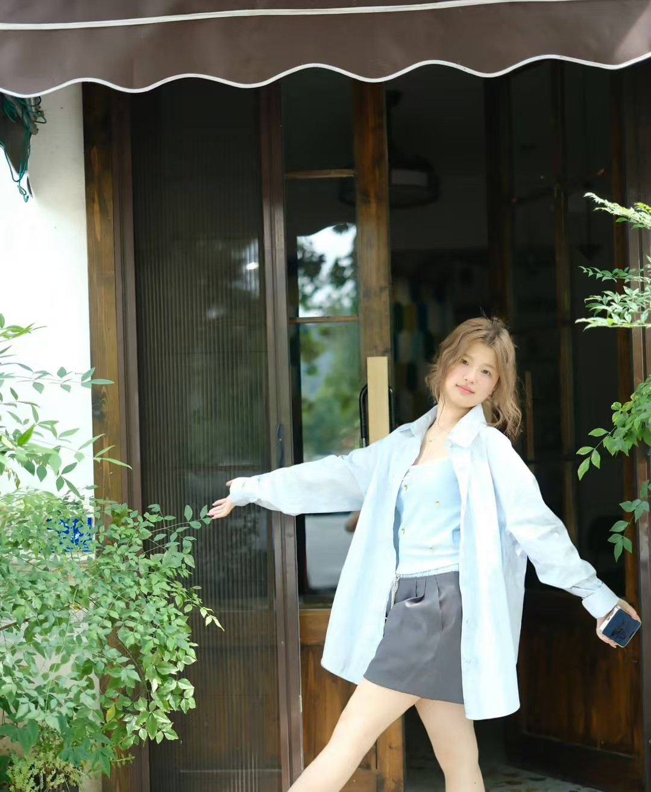
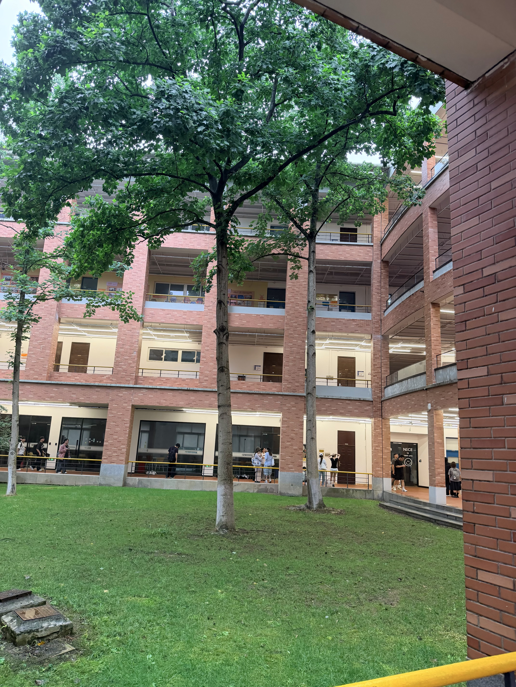
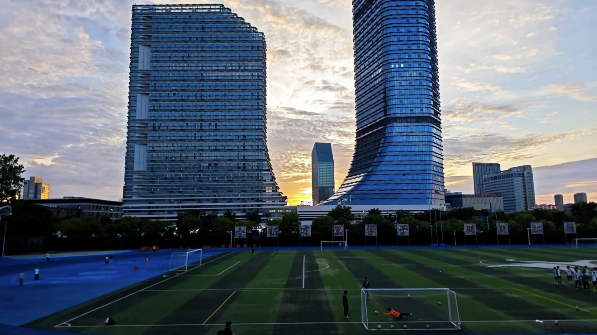
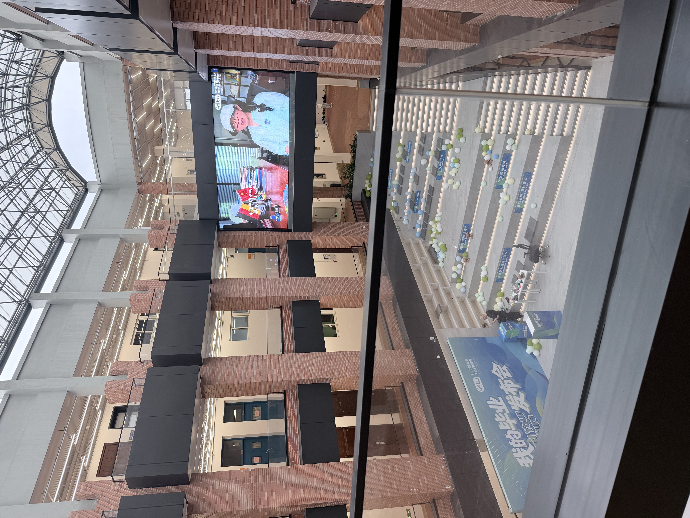

双学位分段培养
采用2+2学习模式，前两年在校内完成美术、设计、数字技术基础课程，后两年前往德国合作院校学习，毕业可以取得中德双方学位证书。

我是张潇原，英文名Yoyo，就读于浙江万里学院中德品牌学部艺术与科技2+2合作班。我们专业同时学习国内设计基础和德国数字艺术相关内容，两种不同的教学思路，也让我慢慢打开了不一样的设计视角。
我目前熟练上手的设计软件是PS、AE，平时会用这两款软件做平面画面、简单动态短片；同时也会借助AI绘画工具辅助完成创意画面、概念草图。硬件、建模、物联网相关内容我还处在入门学习阶段，很多复杂代码和建模操作还很难独立完成，现在跟着课程一步步练习基础接线、简单程序和基础建模，慢慢积累实操经验。
比起纯平面设计，我更喜欢视觉和小装置结合的创作形式，平时会尝试做简单的感应灯光小作品，结合环保、环境监测这类简单主题做课堂作业，一点点摸索艺术和硬件结合的创作方式。
采用2+2学习模式，前两年在校内完成美术、设计、数字技术基础课程，后两年前往德国合作院校学习，毕业可以取得中德双方学位证书。
专业不局限单一美术创作，同时兼顾视觉设计、数字媒体、基础硬件、三维建模相关内容，培养兼顾审美与基础技术的综合设计学生。
同步学习中西方两种设计教学体系，对比不同的创作思路，拓宽自己的设计审美与思考方式。
毕业后直接在国内找动态视觉、平面设计、新媒体视觉类相关工作，依靠PS、AE视觉创作能力入行，工作之余慢慢补充交互、简单装置相关技能，丰富自身竞争力。
如果合适，再考虑走2+2项目赴德深造数字交互设计；若条件不足，就留在国内发展，不强行出国。
整体核心目标：把自己擅长的视觉设计做扎实，以动态视觉类岗位作为就业核心方向，硬件、交互当作加分辅助技能，不盲目追求复杂高阶技术。



我的兴趣：画画手绘、日常拍照记录生活、玩游戏、逛店买东西。